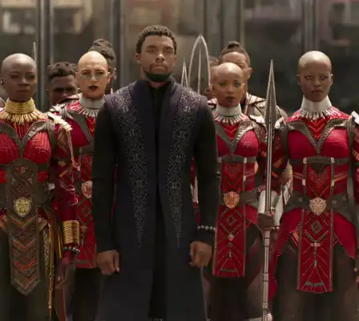

<!DOCTYPE html>
<html lang="FR"x-data="{menuIsOpen: false}" :class="{noscroll:menuIsOpen}"></html>
<head>
    <meta charset="UTF-8">
    <meta http-equiv="X-UA-Compatible" content="IE=edge">
    <meta name="viewport" content="width=device-width, initial-scale=1.0">
    <link rel="stylesheet" href="../src/css/style.css">
    <link rel="alternate" hreflang="en" href="http://architect.claudesamba.fr
    " />
<link rel="alternate" hreflang="es" href="http://architect.claudesamba.fr
" />
<link rel="alternate" hreflang="de" href="http://architect.claudesamba.fr
" />
    <script defer src="https://unpkg.com/alpinejs"></script>
    
    
    <title>Film</title>
   
    <link rel="icon" href="../public/icones/logo.svg" />
</head>

<body>
    <header class="header">
       
        <div class="header__logo-lang">
        <a href="../en/index.html" onclick="document.cookie = 
        `nf_lang=en; path=/ ; SameSite=Strict`
        ">
          
        </a>
        </div>
        <div class="header__logo">
             <a class="header__link-logo" href="/fr/index.html">KULTURE</a>
        </div>


        <button  class="header__menubtn menubtn" aria-controls="mainNav" @click="menuIsOpen = !menuIsOpen" :class="menuIsOpen &&'menubtn--open'" >
            <span class="menubtn__bar"></span>
        </button>

          <nav  id="mainNav" class="header__menu menu"  x-show="menuIsOpen" x-transition.duration.800ms >
             
                <a  class="page-title" href="../fr/index.html">
                    KULTURE
                </a>
            

            <ul class="menu__list">

                <li class="menu__item">
                    <a  class="menu__link "href="film.html">
                        Black Panther
                    </a>
                </li>


                <li class= "menu__item">
            <a class="menu__link "href="realisater.html">
                Ryan Coogler
            </a>
        </li>


        <li class= "menu__item">
            <a class="menu__link "href="musique.html">
              Lift Me Up 
                 
            </a>
        </li>


        <li class= "menu__item">
            <a class="menu__link " href="livre.html">
        A nation under our feet 
        </a>
    </li>


        <li class= "menu__item">
            <a class="menu__link " href="contact.html">
            Contact
        </a>
    </li>

      
    </header>


    <main>

    <h1 class="titre_article">  “ Black Panther” - L'odyssée qui brise les frontière des Super-héros  </h1>
<p class="date_publication"> Par Claude MALANDA 
    </p> 
    
    <p class="date_publication"> Publier le 24 / 10 / 2024 , mis à jour aujourd’hui à 9h45
    </p>
   
    <div class="chapo">
    <p> Sorti en 2018, Black Panthère est devenu plus qu’un simple film de super-héros, mais plutôt une référence. Réalisé par Ryan Coogler, il a très vite acquis une signification culturelle impactante avec la mise en avant de T’challa le roi du wakanda. </p>
    </div>
    
    

 <p> Le film se concentre sur le royaume fictif de Wakanda, une nation africaine secrète et technologiquement avancée. Wakanda est riche en vibranium, un métal extrêmement précieux aux propriétés exceptionnelles. Le récit tourne autour de la famille royale de Wakanda, en particulier T'Challa, interprété par Chadwick Boseman, qui est le prince héritier et, par la suite, le roi de Wakanda.</p>
 
<p> L'histoire commence après les événements de "Captain America: Civil War" lorsque T'Challa retourne à Wakanda pour prendre sa place sur le trône après la mort de son père. Il devient également le super-héros Black Panther en ingérant l'herbe-cœur, qui confère des capacités surhumaines.
</p>

<p> Cependant, la paix de Wakanda est menacée par des forces extérieures, notamment le méchant Erik Killmonger, joué par Michael B. Jordan, qui a un lien de parenté avec la famille royale et cherche à renverser T'Challa.
</p>
 
 <div class="section_clair">

    <div class="image-container">
 
</div>

 <p> Le pouvoir et la force des femmes sont extraordinairement mis en avant dans le film, et cela a eu un impact significatif sur le public. Le film démontre que le leadership n'a pas de genre, mettant en lumière des femmes telles que Nakia, une femme forte avec une conscience solide, Shuri, une scientifique incroyablement intelligente qui est la sœur de Black Panther et à seulement 16 ans, elle est chargée de la technologie avancée du Wakanda, et des guerrières telles qu'Okoye, chef des redoutables Dora Milaje, une force intrépide dans la protection de Wakanda.
</p>

<p> Ces femmes ne sont pas simplement des faire-valoir, mais elles occupent des rôles centraux et influents dans l'intrigue. Le film prend l'initiative d'élargir le rôle des femmes dans le monde des super-héros en les présentant comme des leaders puissantes, des innovatrices et des protectrices de leur nation. Cette représentation positive des femmes est un élément clé de ce qui fait de "Black Panther" un film révolutionnaire dans le genre des super-héros.

</p> 
</div>

<div class="image-container">

</div>
<p>Le film a un impact significatif dans le domaine scientifique grâce à la manière dont il présente des personnages tels que Shuri, en tant que brillante scientifique et innovatrice. Shuri est le cerveau technologique derrière Wakanda, créant des avancées scientifiques impressionnantes. Son rôle dans le film a inspiré des discussions sur la promotion des femmes dans les sciences, en particulier les minorités.
   </p> 
  <p>L'impact de ce film dans le domaine scientifique réside dans son potentiel à susciter l'intérêt des jeunes pour les sciences, à promouvoir la diversité dans ces domaines et à stimuler la réflexion sur les avancées technologiques futures.</p>
   
  <div class="section_clair">

    <div class="image-container">
    
   </div>
   
    <p> Briser les stéréotypes ! C'est ce que propose le film Black panthère, offrir une meilleure représentation des Afro-américains, une Afrique imaginaire, prospère technologiquement, un leader inspirant qui inspire la dignité et la sagesse 
 
   </p>
   
   <p>
      Cet article de disney vous offre plus de détail sur le résumé du films : Découvrez le Wakanda
   </p> 

  </div>

<p>Le réalisateur du film "Black Panther" est Ryan Coogler Il est connu pour son talent dans la réalisation, la production, et le scénario de films.</p>

<div class="button-article"> 
    
   <button class="btn-fill"> <a a class="btn__fill" href="musique.html"> En savoir plus</a>
  </button> 
</div>

</main>
<footer class="footer">

    <div class="menu--separation">
      <span class="menu__barresep"></span>
  </div>

    <div class="footer-colum">
        

        <div class="menu__container">
            <p class="footer__texte">Claude MALANDA</p>
            <a class="footer__mail" href="mailto:claude.malamda_samba@edu.univ-fcomte.fr">claude.malamda_samba@edu.univ-fcomte.fr</a>

            <div class="reseau">
                <a href="#">
                    
                </a>
                <a href="#">
                    
                </a>
                <a href="#">
                    
                </a>
            </div>
        </div>
   

    
        <div class="footer_p">

          
            <p><a class="footer__lien-title" href="../fr/apropos.html">À propos</a>
            </p>
            
           <p><a class="footer__lien-title"  href="../fr/apropos.html">Glossaire</a></li>
           </p> 
            <p><a class="footer__lien-title"   href="../fr/autres.html">Autres projets</a>
           </p>

        
           
        </div>
</div>
        <p class="footer__p">
            Projet réalisé dans le cadre d'un exercice pédagogique au
            <a class="footer__link" href="http://mmimontbeliard.com/contact">
                département MMI de Montbéliard
            </a>
        </p>
    
</footer>

</body>
</html>